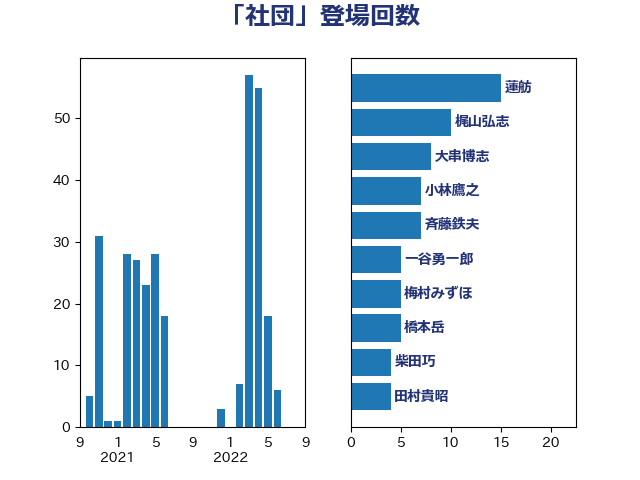

単語「社団」

| 蓮舫 | 立憲民主党 | 15 回 |
| 梶山弘志 | 自由民主党 | 10 回 |
| 大串博志 | 立憲民主党 | 8 回 |
| 小林鷹之 | 自由民主党 | 7 回 |
| 斉藤鉄夫 | 公明党 | 7 回 |
| 一谷勇一郎 | 日本維新の会 | 5 回 |
| 梅村みずほ | 日本維新の会 | 5 回 |
| 橋本岳 | 自由民主党 | 5 回 |
| 柴田巧 | 日本維新の会 | 4 回 |
| 田村貴昭 | 日本共産党 | 4 回 |
| 大島敦 | 立憲民主党 | 3 回 |
| 平山佐知子 | 無所属 | 3 回 |
| 末松信介 | 自由民主党 | 3 回 |
| 森英介 | 自由民主党 | 3 回 |
| 浜田聡 | NHK党 | 3 回 |
| 牧義夫 | 立憲民主党 | 3 回 |
| 石井浩郎 | 自由民主党 | 3 回 |
| 福田昭夫 | 立憲民主党 | 3 回 |
| 中山展宏 | 自由民主党 | 2 回 |
| 中西祐介 | 自由民主党 | 2 回 |
| 務台俊介 | 自由民主党 | 2 回 |
| 小泉進次郎 | 自由民主党 | 2 回 |
| 山添拓 | 日本共産党 | 2 回 |
| 川田龍平 | 立憲民主党 | 2 回 |
| 斎藤アレックス | 国民民主党 | 2 回 |
| 田名部匡代 | 立憲民主党 | 2 回 |
| 萩生田光一 | 自由民主党 | 2 回 |
| 金子恵美 | 立憲民主党 | 2 回 |
| たがや亮 | れいわ新選組 | 1 回 |
| 上川陽子 | 自由民主党 | 1 回 |
| 上月良祐 | 自由民主党 | 1 回 |
| 下条みつ | 立憲民主党 | 1 回 |
| 中川宏昌 | 公明党 | 1 回 |
| 中根一幸 | 自由民主党 | 1 回 |
| 串田誠一 | 日本維新の会 | 1 回 |
| 伊藤孝江 | 公明党 | 1 回 |
| 伊藤岳 | 日本共産党 | 1 回 |
| 勝部賢志 | 立憲民主党 | 1 回 |
| 吉田統彦 | 立憲民主党 | 1 回 |
| 吉良よし子 | 日本共産党 | 1 回 |
| 國重徹 | 公明党 | 1 回 |
| 塩田博昭 | 公明党 | 1 回 |
| 大口善徳 | 公明党 | 1 回 |
| 大塚耕平 | 国民民主党 | 1 回 |
| 大野敬太郎 | 自由民主党 | 1 回 |
| 宮崎雅夫 | 自由民主党 | 1 回 |
| 寺田静 | 無所属 | 1 回 |
| 尾身朝子 | 自由民主党 | 1 回 |
| 山田太郎 | 自由民主党 | 1 回 |
| 岡本あき子 | 立憲民主党 | 1 回 |
| 岸信夫 | 自由民主党 | 1 回 |
| 市村浩一郎 | 日本維新の会 | 1 回 |
| 庄子賢一 | 公明党 | 1 回 |
| 後藤茂之 | 自由民主党 | 1 回 |
| 斎藤嘉隆 | 立憲民主党 | 1 回 |
| 木村英子 | れいわ新選組 | 1 回 |
| 本庄知史 | 立憲民主党 | 1 回 |
| 東徹 | 日本維新の会 | 1 回 |
| 松下新平 | 自由民主党 | 1 回 |
| 松島みどり | 自由民主党 | 1 回 |
| 松沢成文 | 日本維新の会 | 1 回 |
| 森屋宏 | 自由民主党 | 1 回 |
| 武田良太 | 自由民主党 | 1 回 |
| 浜口誠 | 国民民主党 | 1 回 |
| 浜野喜史 | 国民民主党 | 1 回 |
| 渡辺周 | 立憲民主党 | 1 回 |
| 牧原秀樹 | 自由民主党 | 1 回 |
| 田村憲久 | 自由民主党 | 1 回 |
| 石井章 | 日本維新の会 | 1 回 |
| 石原宏高 | 自由民主党 | 1 回 |
| 石垣のりこ | 立憲民主党 | 1 回 |
| 福島みずほ | 社会民主党 | 1 回 |
| 秋野公造 | 公明党 | 1 回 |
| 稲津久 | 公明党 | 1 回 |
| 竹内真二 | 公明党 | 1 回 |
| 笠浩史 | 無所属 | 1 回 |
| 自見はなこ | 自由民主党 | 1 回 |
| 舟山康江 | 国民民主党 | 1 回 |
| 舩後靖彦 | れいわ新選組 | 1 回 |
| 芳賀道也 | 国民民主党 | 1 回 |
| 若松謙維 | 公明党 | 1 回 |
| 荒井優 | 立憲民主党 | 1 回 |
| 西岡秀子 | 国民民主党 | 1 回 |
| 谷田川元 | 立憲民主党 | 1 回 |
| 赤木正幸 | 日本維新の会 | 1 回 |
| 赤羽一嘉 | 公明党 | 1 回 |
| 進藤金日子 | 自由民主党 | 1 回 |
| 金城泰邦 | 公明党 | 1 回 |
| 青山大人 | 立憲民主党 | 1 回 |
| 馬場雄基 | 立憲民主党 | 1 回 |
| 高橋英明 | 日本維新の会 | 1 回 |
| 鳩山二郎 | 自由民主党 | 1 回 |